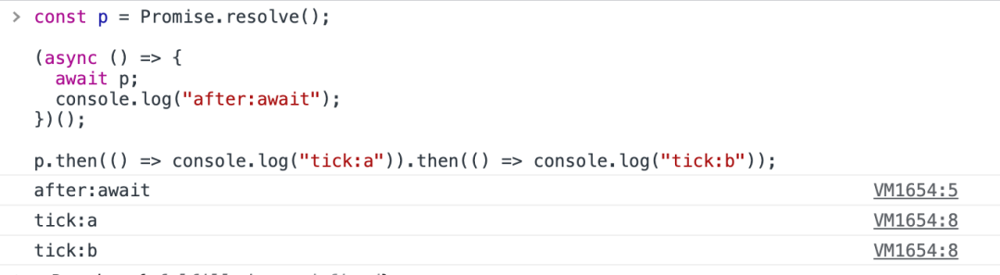

HaoTian · 2024-09-01 15:21:24
React 的内置组件：React.useLayoutEffect
在 React 的世界里，useEffect Hook 已经非常流行，它允许我们在组件的生命周期中执行副作用操作。但是，当涉及到 DOM 布局的副作用时，useLayoutEffect 提供了一个更加精确的解决方案。
useLayoutEffect 与 useEffect 非常相似，但它会在所有的 DOM 变更之后同步执行。这意味着，你可以在执行 DOM 操作后立即获取 DOM 的尺寸、位置等信息，而不会阻塞浏览器的渲染。
在 React 的渲染过程中，useLayoutEffect 会在 DOM 更新之前执行，这保证了副作用的执行不会影响浏览器的重排和重绘，从而提高性能。
下面是一个简单的 useLayoutEffect 使用示例：
import React, { useRef, useLayoutEffect } from "react";
function ComponentWithLayoutEffect() {
const ref = useRef(null);
useLayoutEffect(() => {
// 直接访问DOM节点的尺寸和位置
const width = ref.current.offsetWidth;
console.log(`Width: ${width}px`);
}, []); // 空依赖数组意味着这个effect只在组件挂载时执行一次
return <div ref={ref}>Check console for the width</div>;
}
由于 useLayoutEffect 是同步执行的，如果副作用操作非常耗时，可能会导致浏览器的渲染阻塞。因此，如果副作用操作可以异步执行，推荐使用 useEffect。
useLayoutEffect 非常适合用于需要立即响应 DOM 布局变化的场景，比如动态调整元素尺寸、计算布局等。
useLayoutEffect 是 React 中一个非常有用的 Hook，它帮助我们解决了布局相关的副作用问题，提高了应用的性能和用户体验。
如果你正在开发复杂的 React 应用，并且需要处理 DOM 布局的副作用，那么 useLayoutEffect 绝对是你不可错过的工具！
